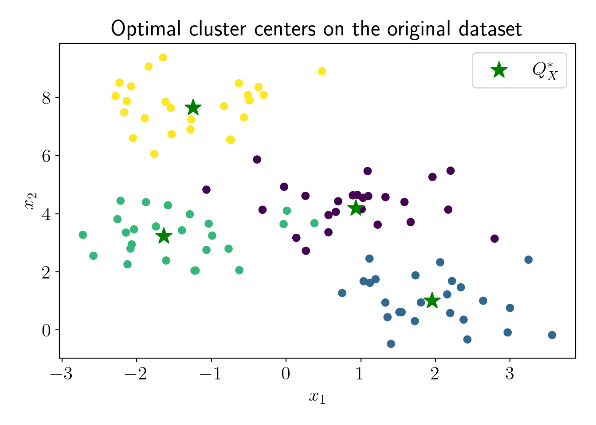
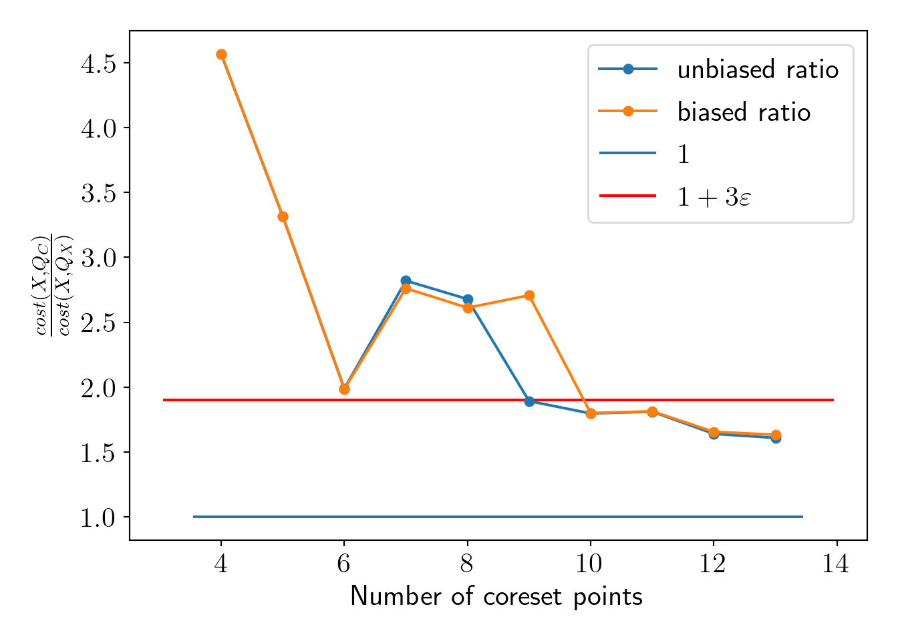
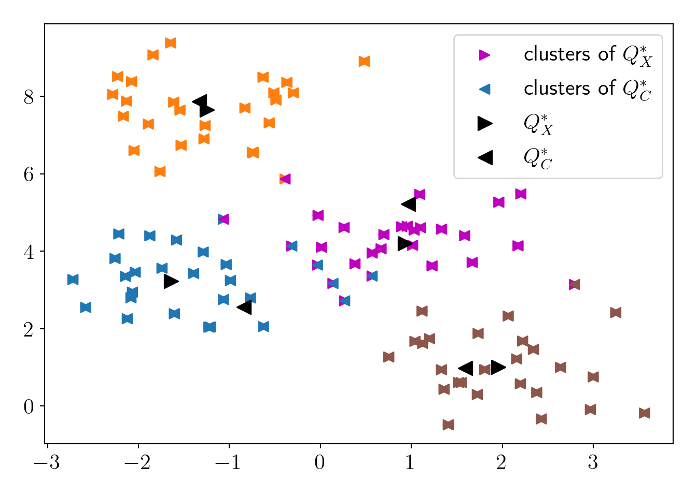
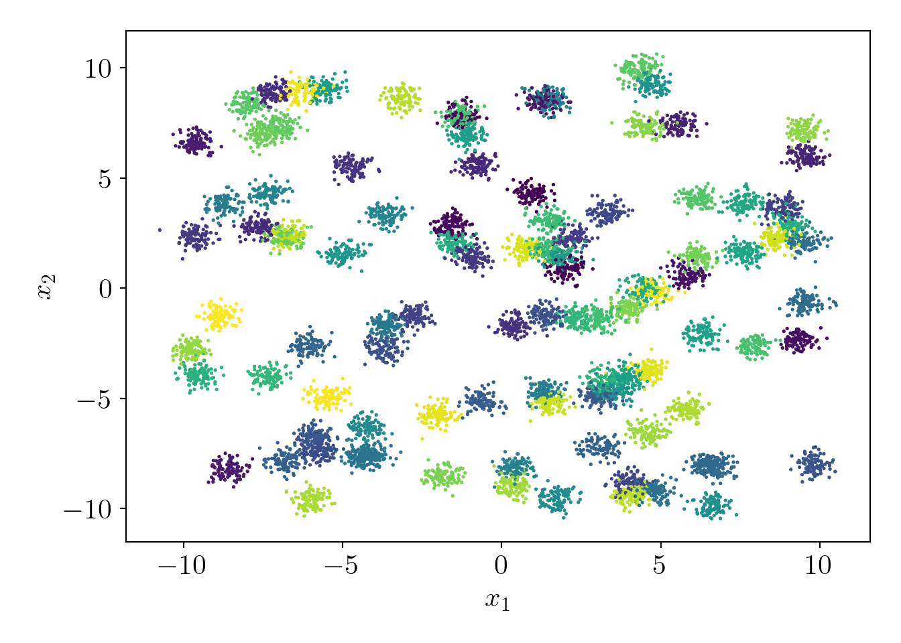
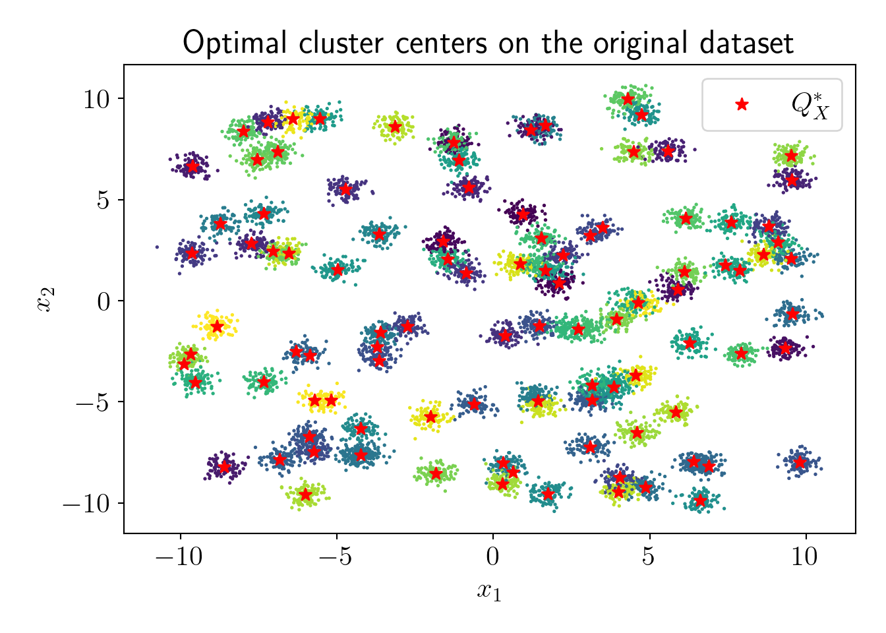
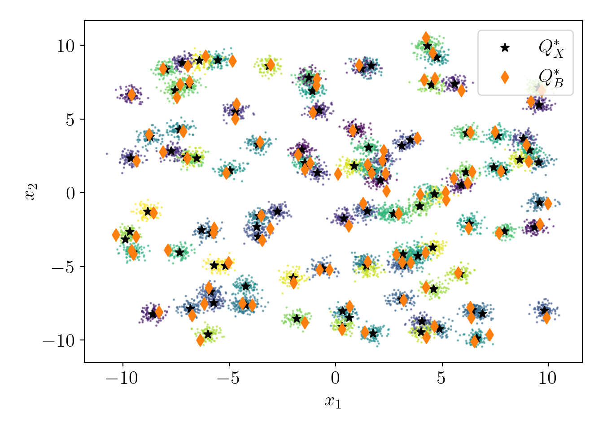
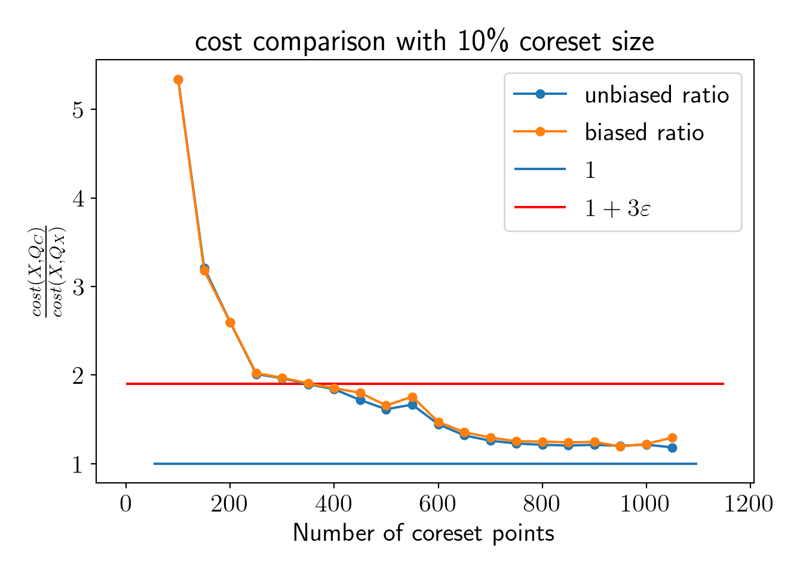

Coresets: 4 Coresets for KMeans (Practical)
In this practical, we will try to create an \(\varepsilon\)-coreset (\(\varepsilon=0.3\)) for KMeans clustering.
Let us import some packages and set up a few useful functions,
from sklearn.cluster import KMeans
from sklearn.datasets import make_blobs
from scipy.spatial.distance import cdist, pdist
import matplotlib.pyplot as plt
import numpy as np
import pandas as pd
from matplotlib import rc
import warnings
warnings.filterwarnings('ignore')
rc('font', size=16)
rc('text', usetex=True)
def plot_essentials(): # essential code for every plot
hand, labs = plt.gca().get_legend_handles_labels()
if len(hand)>0:
plt.legend(hand, labs);
plt.tight_layout();
plt.show()
plt.close()4.1 Pseudo-data with 4 clusters
Now, we generate a pseudo-dataset with 4 clusters.
N = 100
K = 4
d = 2
epsilon = 0.3
c4X, c4y = make_blobs(n_samples=N, centers=K, n_features=d, random_state=0, cluster_std=0.8)
plt.scatter(c4X[:,0], c4X[:,1], c=c4y);
plt.xlabel('$x_1$');plt.ylabel('$x_2$');
plot_essentials()We run the KMeans algorithm on the full dataset to calculate \(cost(X, Q^*_X)\). Note that, in practice, this is infeasible because of superlinear time-complexity, but we perform this step to have a comparison between \(cost(X, Q^*_X)\) and \(cost(X, Q^*_C)\).
full_model = KMeans(n_clusters=K, random_state=0)
full_model.fit(c4X);
cost_QX = full_model.inertia_/NOptimal cost on the full dataset is \(cost(X, Q^*_X)=\) 1.16.
Q_X = full_model.cluster_centers_
plt.scatter(c4X[:,0], c4X[:,1], c=c4y);
plt.scatter(Q_X[:,0], Q_X[:,1], s=200, marker='*', label='$Q^*_X$', c='green');
plt.xlabel('$x_1$');plt.ylabel('$x_2$');
plt.title('Optimal cluster centers on the original dataset');
plot_essentials()
The next step is running the \(D^2\) sampling algorithm on the full dataset to get the approximate centers \(Q^*_B\). To ensure that \((\alpha, \beta)\) criterion holds with probability \(0.9\), we need to run \(D^2\) sampling \(\log_2\left(\frac{1}{1-0.9}\right) \approx 4\) times and select the best clustering (least cost).
cost_QB = np.inf
for trial in range(4):
np.random.seed(trial)
fst_idx = np.random.choice(N) # Choosing first center randomly
B = [] # Approximate cluster centers
B.append(c4X[fst_idx])
for choice in range(K-1): # Choice of remaining K-1 centers
proba = np.square(cdist(c4X, np.array(B))).min(axis=1)
norm_proba = proba/np.sum(proba)
idx = np.random.choice(N, p=norm_proba)
B.append(c4X[idx,:])
tmp_cost = np.square(cdist(c4X, np.array(B)).min(axis=1)).sum()/N
if tmp_cost<cost_QB:
cost_QB = tmp_cost
B_star = B.copy()As per the \((\alpha, \beta)\) criterion, \(cost(X,Q^*_B) \le \alpha\cdot cost(X,Q^*_X)\), where \(\alpha=16(\log_2K+2)cost(X,Q^*_X)\). Thus, ratio \(R(Q^*_B, Q^*_X) = \frac{cost(X,Q^*_B)}{cost(X,Q^*_X)} \le \alpha\). Lower the ratio, better the approximation we have. Let us see how much ratio we get experimentally.
alpha = 16*(np.log2(K) + 2)
alpha_R = cost_QB/cost_QX;\(\alpha=\) 64 and experimental ratio is 1.59. The experimental ratio is much lower than the upper limit, which is expected given the well-separated clusters and small data. Let us visualize the approximate centers \(Q^*_B\).
Q_B = np.array(B_star)
plt.scatter(c4X[:,0], c4X[:,1], c=c4y, alpha=0.5);
plt.scatter(Q_X[:,0], Q_X[:,1], s=200, marker='*', c='green', label='$Q^*_X$');
plt.scatter(Q_B[:,0], Q_B[:,1], s=200, marker='d', c='red', label='$Q^*_B$');
plt.xlabel('$x_1$');plt.ylabel('$x_2$');
plot_essentials()Now, we will perform the importance sampling to select the coreset points. The following are the essential variables that we need to compute to calculate sensitivity and probability for the importance sampling.
B_y = cdist(c4X, Q_B).argmin(axis=1); # Cluster labels according to Q_B
cost_QB = np.square(cdist(c4X, Q_B)).min(axis=1); # Cost(X, Q_B)
mean_cost_QB = np.mean(cost_QB);
cost_QB_cluster = [cost_QB[B_y==C].mean() for C in range(K)]; # Cost of each cluster
cluster_n = pd.Series(B_y).sort_index().value_counts().values # Cardinality of each cluster
S = 6*alpha + 4*K; # Total sensitivityWe can calculate the sensitivity and probability for each data-point as following,
# Sensitivity
s_x = np.array([2*alpha*cost_QB[i]/mean_cost_QB +\
4*alpha*cost_QB_cluster[B_y[i]]/mean_cost_QB +\
4*N/cluster_n[B_y[i]] for i in range(N)])
# Probability
q_x = s_x/S/N
assert np.sum(q_x).round(2) == 1.
q_x = q_x/q_x.sum() # Adjusting for numerical precision to make sum(q)=1Let us visualize the probabilities of the data-points.
map_ax = plt.scatter(c4X[:,0], c4X[:,1], c=q_x);
plt.colorbar(map_ax);
plt.xlabel('$x_1$');plt.ylabel('$x_2$');
plot_essentials()We have completed all the pre-requisite steps for importance sampling. Now, let us perform the importance sampling. Initially, we will set the coreset size to only 10% of the total data-points.
np.random.seed(0)
C = int(0.1*N) # Number of points to draw (coreset size)
C_idx = np.random.choice(N, size=C+K, p=q_x) # Coreset index
c4C = c4X[C_idx] # Coreset points
Cw = 1/q_x[C_idx] # Corresponding weights Now, we can run the Weighted KMeans algorithm Abras and Balları́n (2005) to get unbiased cluster centers \(Q^*_C\). After that, we can visually see the minimum number of samples for which the coreset property holds (when \(Q^*_C\) becomes a good approximation for \(Q^*_X\) according to the definition of coresets).
cost_QC = [] # cost(X, Q_C)
cost_QC_biased = []
for n_points in range(K, C+K):
# Unbiased estimate
tmp_model = KMeans(n_clusters=K, random_state=0);
tmp_model = tmp_model.fit(c4C[:n_points], sample_weight=Cw[:n_points]);
Q_C = tmp_model.cluster_centers_
tmp_cost = np.square(cdist(c4X, Q_C)).min(axis=1).sum()/N
cost_QC.append(tmp_cost)
# Biased estimate
tmp_model_biased = KMeans(n_clusters=K, random_state=0);
tmp_model_biased = tmp_model_biased.fit(c4C[:n_points]);
Q_C_biased = tmp_model_biased.cluster_centers_
tmp_cost_biased = np.square(cdist(c4X, Q_C_biased)).min(axis=1).sum()/N
cost_QC_biased.append(tmp_cost_biased)
plt.plot(range(K, C+K), np.array(cost_QC)/cost_QX, 'o-', markersize=5, label='unbiased ratio');
plt.plot(range(K, C+K), np.array(cost_QC_biased)/cost_QX, 'o-', markersize=5, label='biased ratio');
plt.hlines(1, *plt.xlim(), label='$1$');
plt.hlines(1+3*epsilon, *plt.xlim(), label='$1+3 \\varepsilon $', color='red');
plt.xlabel('Number of coreset points');plt.ylabel('$\\frac{cost(X, Q_C)}{cost(X, Q_X)}$');
plot_essentials()
We see that the coreset property holds at a substantially smaller number of points. However, the number of coreset points does not depend on the number of data-points \(N\), but it depends on the number of clusters \(K\), dimension of data \(d\), \(\varepsilon\) and minimum probability \(\delta\) for coreset. The upper bound defined by Bachem, Lucic, and Krause (2017) suggests drawing nearly 2000 points for our current settings, but we can see that, in practice, coreset property holds with a much lesser number of coreset points. Theoretical bound is given as the following,
\[ \text{Number of coreset points } m = \Omega\left( \frac{dK^3\log(K)+K^2\log(\frac{1}{\delta})}{\varepsilon^2}\right) \]
We will draw a coreset with a 20% size of the original dataset and fix it as the coreset for further analysis.
np.random.seed(0)
C = int(0.2*N) # Number of points to draw (coreset size)
C_idx = np.random.choice(N, size=C+K, p=q_x) # Coreset index
c4C = c4X[C_idx] # Coreset points
Cw = 1/q_x[C_idx] # Corresponding weights Now, let us visualize the cluster centers \(Q^*_C\) found by running KMeans on the coreset and cluster centers \(Q^*_X\) found by running KMeans on the original dataset (again, just to demonstrate).
full_model = KMeans(n_clusters=K, random_state=0)
full_model = full_model.fit(c4X)
cost_QX = -full_model.score(c4X) # cost(X, Q_X) (score is opposite of cost)
Q_X = full_model.cluster_centers_
X_labels = full_model.predict(c4X)
coreset_model = KMeans(n_clusters=K, random_state=0)
coreset_model = coreset_model.fit(c4C, sample_weight=Cw)
cost_QC = -coreset_model.score(c4X) # cost(X, Q_C)
Q_C = coreset_model.cluster_centers_
C_labels = coreset_model.predict(c4X)
colors1 = ['tab:blue', 'tab:orange', 'tab:brown', 'm']
mapper1 = lambda x: [colors1[i] for i in x]
colors2 = ['tab:orange', 'tab:brown', 'tab:blue', 'm']
mapper2 = lambda x: [colors2[i] for i in x]
plt.scatter(c4X[:,0], c4X[:,1], c=mapper1(X_labels), marker='>', label='clusters of $Q^*_X$', s=50);
plt.scatter(c4X[:,0], c4X[:,1], c=mapper2(C_labels), marker='<', label='clusters of $Q^*_C$', s=50);
plt.scatter(Q_X[:,0], Q_X[:,1], c='k', marker='>', s=100, label='$Q^*_X$');
plt.scatter(Q_C[:,0], Q_C[:,1], c='k', marker='<', s=100, label='$Q^*_C$');
plot_essentials()
\(cost(X, Q^*_X)=\) 116
\(cost(X, Q^*_C)=\) 156
\(R=\frac{cost(X, Q^*_C)}{cost(X, Q^*_X)}=\) 1.343 \(< \frac{1+\varepsilon}{1-\varepsilon}=\) 1.857
We can see that \(Q^*_C\) can approximate the \(Q^*_X\) efficiently as per our requirement of \(\varepsilon\)-coreset.
4.2 Pseudo-dataset with 100 clusters and 10000 data-points
Let us try the coreset construction on a more extensive dataset. First, we will generate a dataset with 100 clusters and 10000 points. I have hidden the code for better visuals and to avoid redundancy.

Now, let us check the actual fit with vanilla KMeans algorithm,

Now, we find approximate centers \(Q^*_B\) with \(D^2\) sampling,
\(\alpha=\) 138.3 and experimental ratio is 1.8.

Let us visualize the probability distribution over all data points.
Now, we visualize comparison between \(cost(C,Q)\) and \(cost(X,Q)\) as we increase \(m\).

We see that \(cost(C, Q)\) starts satisfying coreset property well below 10% of the total dataset. Let us fix the coreset size at 10% of the entire dataset and check the effect on the coreset property.
\(cost(X, Q^*_X)=\) 1585
\(cost(X, Q^*_C)=\) 1876
\(R=\frac{cost(X, Q^*_C)}{cost(X, Q^*_X)}=\) 1.183 \(< \frac{1+\varepsilon}{1-\varepsilon}=\) 1.857
We can see that \(Q^*_C\) can approximate the \(Q^*_X\) efficiently as per our requirement of \(\varepsilon\)-coreset.